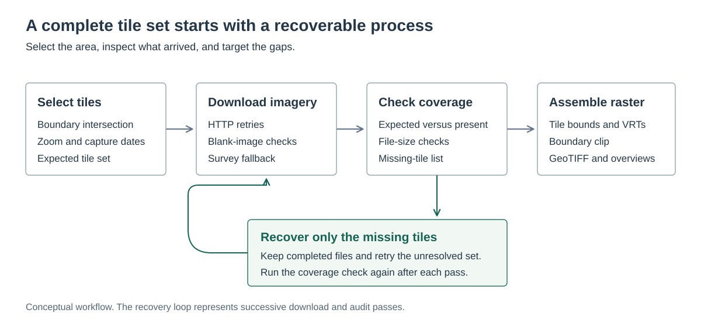

From aerial imagery to building footprints and roads
A Python and GDAL imagery pipeline feeding deep learning extraction of building footprints and roads.
What I did
I built the imagery collection and mosaic workflow, then used the prepared imagery with deep learning algorithms to extract building footprints and roads.
Result: Archived October 2025 runs show the unresolved tile count falling from 453 to 64 and then to zero. The final coverage check accounted for all 120,426 expected tiles, followed by a logged mosaic write.
Tools
- Python
- GDAL
- Shapely
- Nearmap API
- Raster processing
- Deep learning
The archived counts measure imagery coverage. They do not measure building or road extraction accuracy.
Recovery is part of the workflow
I separated downloading, coverage checks, and mosaic assembly so a failed tile did not require repeating the entire collection. Recovery passes could use the missing-tile list while keeping the files already collected.

What the archived runs show
The count of 120,426 comes from comparing the expected tile set with files on disk. The recovery sequence documents how the collection was completed; it does not establish imagery accuracy.
| Date | Checkpoint | Recorded result |
|---|---|---|
| October 9, 2025 | Initial download | 119,973 tiles saved; 453 missing, blank, or failed |
| October 13, 2025 | Recovery pass | 389 additional tiles saved; 64 still unresolved |
| October 14, 2025 | Final recovery pass | Last outstanding tile saved; zero unresolved after successive passes |
| October 14, 2025 | Coverage check | 120,426 expected and present; zero missing or undersized files |
| October 14, 2025 | Mosaic assembly | Output write completed in the execution log |
Turning tiles into a usable raster
- Polygon intersection limits requests to tiles that overlap the area of interest.
- Date and survey selection control which captures are requested, with alternate survey lookup for unsuccessful downloads.
- GDAL assigns tile bounds, combines the tiles through virtual rasters, and clips the mosaic to the boundary.
- Tiled GeoTIFF output and overviews support navigation at different map scales.
From mosaics to mapped features
The mosaics became inputs to deep learning algorithms for extracting building footprints and roads. The imagery pipeline supplied the raster inputs for this downstream mapping work.
The tile counts above describe imagery preparation. Building and road extraction is a subsequent stage, with different outputs and evaluation requirements.
Output and scope
The working archive retains a clipped GeoTIFF for a smaller area of interest, along with its overview file. The full tile collection and full-area mosaic are represented here by their archived completion records.
This case study presents the processing method and recorded tile counts. The public illustration is a diagram; licensed imagery and operational configuration remain outside the portfolio.
Technical details
Municipal GIS workflow · Imagery collection in October 2025
Extracting buildings and roads from aerial imagery first requires usable imagery across the study area. Missing or blank downloads need to be found and recovered before assembling the raster inputs.
- Derive the tile set from an area boundary and the selected imagery dates.
- Download tiles with HTTP retries, blank-image checks, and alternate survey lookup.
- Compare expected tiles with files on disk, then rerun only the missing set.
- Georeference the tiles, build a virtual mosaic, clip it to the boundary, and create raster overviews.
- Use the prepared imagery as input to deep learning extraction of building footprints and roads.